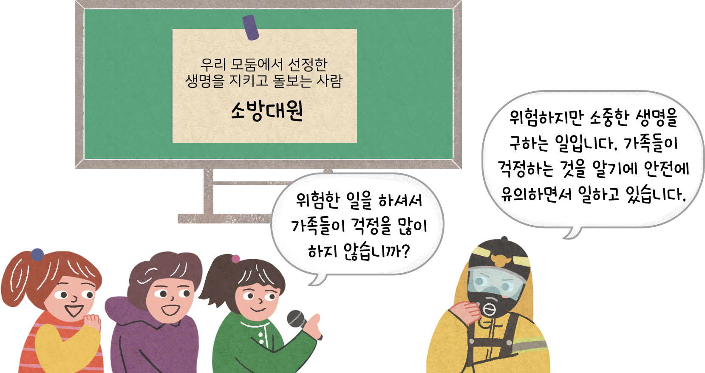

- 활동 1
- 활동 2
-
-
활동 방법
-
1모둠에서 한 명이 ‘생명을 지키고 돌보는 사람’ 역할 맡기
-
2역할을 맡은 사람은 그 사람이 됐다고 생각하기
-
3나머지 모둠원은 역할을 맡은 사람에게 질문할 내용 작성하기
-
4역할을 맡은 사람에게 모둠원들이 질문하고 답변 듣기
-
-

-
-
-
무엇을 질문할 수 있을까요?생명을 지키고 돌보는 일의 내용생명을 지키고 돌보는 일을 하게 된 까닭생명을 지키고 돌보는 일을 할 때 어려운 점생명을 지키고 돌보는 일을 하면서 얻은 보람그 외 궁금한 것
-
생명을 지키고
돌보는 사람면담 질문 대답 소방대원
생명을 지키기 위해 어떤 일을 하시나요?
불을 끄고 위험에 처한 사람이나 동물을 구조합니다.
소방대원 일을 할 때 어려운 점은 무엇인가요?
불이 잘 꺼지지 않거나 구조하기 힘든 경우에 어려움을 느낍니다.
소방대원으로서 얻는 보람은 무엇인가요?
생명을 구했을 때 뿌듯함을 느끼고 이 일을 하길 잘했다는 생각이 듭니다.
-